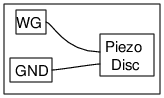

<h2 id="schematic">Schematic</h2>
<hr>
<p></p>
<h2 id="instructions">Instructions</h2>
<hr>
<ul>
<li>Make connections as shown in the figure.</li>
<li>Change the frequency of WG and listen to the sound.</li>
<li>The sound is very high at some frequency. This is due to the resonance of the
Piezo disk.</li>
</ul>